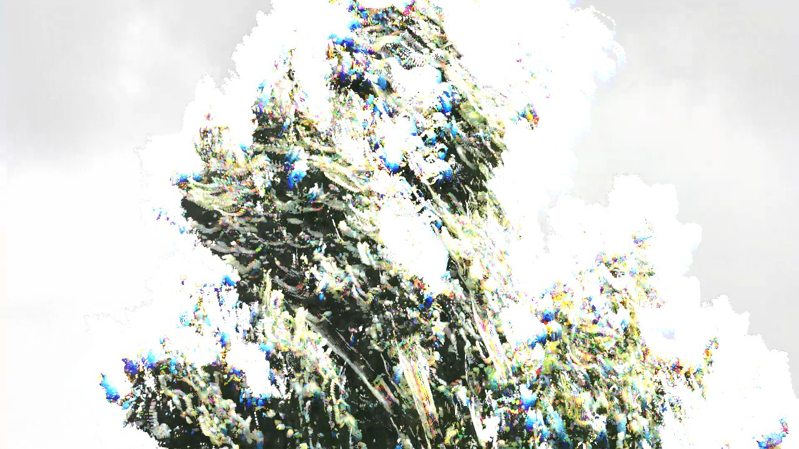

MODE 1 / 6
Posy
current + inverted frame from 333 ms earlier · grey is stillness
640 × 360
· WebGL2
29.97
fps · 4.1 ms
● trees-in-wind.mp4
GAP
333
ms
SPREAD
67
ms
THRESHOLD
24
TRAIL
500
ms
DISPLAY
GLOW
◂◂
❚❚ PAUSE
▸▸
00:04.03
/ 00:13.00
frame 121
1.0×
LOOP
● REC
SPACE
play
← →
step
1–6
mode
[ ]
gap
S
split
O
original
P
parameters
N
source
H
hide all
?
keys